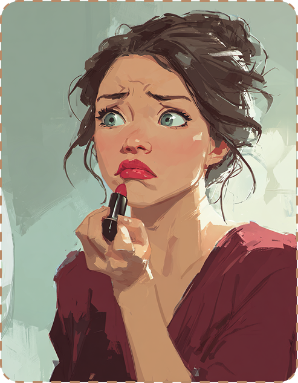
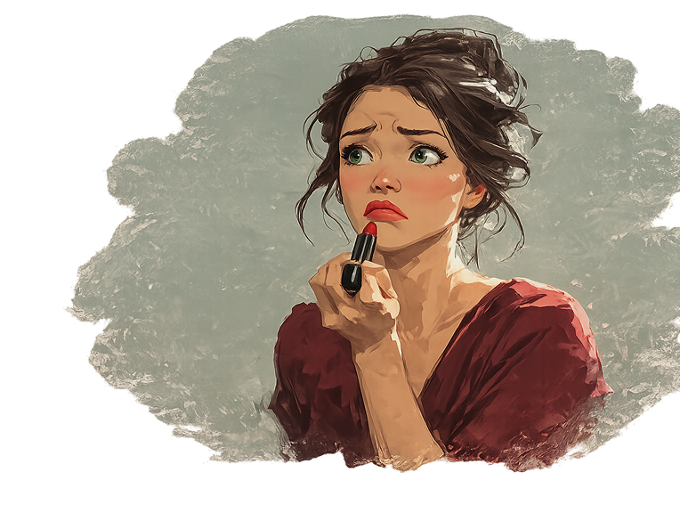
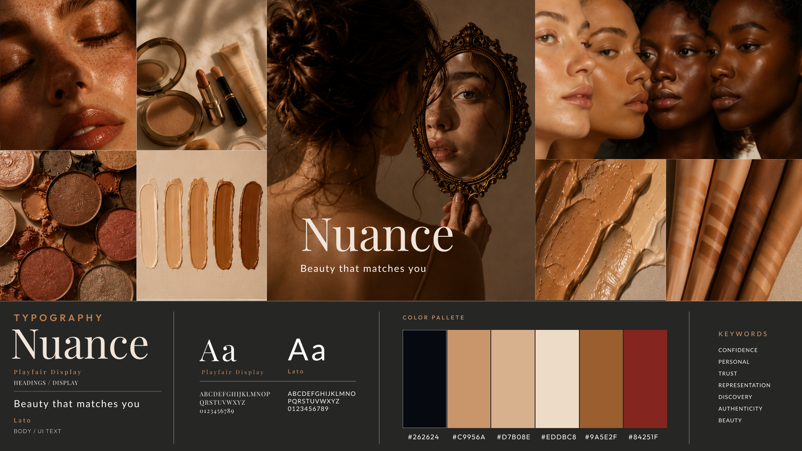
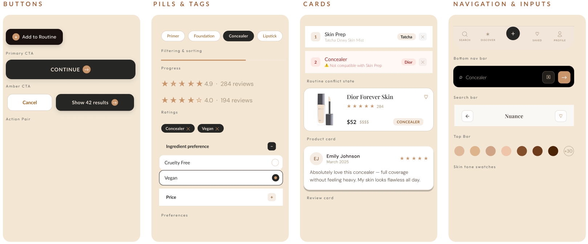
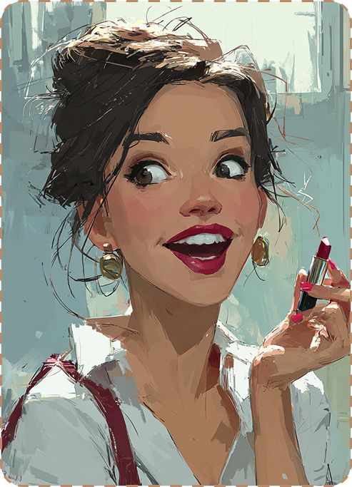

A mobile beauty app that simplifies how people find and manage makeup: personalized shade matching, routine compatibility checking, and unsponsored reviews in one place.
All of this makes it harder to find the right product. Nobody likes wasting time, money, and patience.
“If it takes too long, I give up.”
Stacy Keech
If it takes too long, I give up.
Fear of wasting money increases research time and drives people to give up altogether.
"I never trust sponsored posts."
"I look for people with my skin type."
"Shades never match in real life."
"I check many reviews before buying."
14 respondents, mostly ages 18-34.
Disappointed by an online-recommended purchase
Trust sponsored content less, even when disclosed
Value rating for filtering reviews by skin type & tone
Likelihood to use an honest, unsponsored platform
“If it takes too long,
I give up.”

22 · Student · Atlanta, GA
Stacy wasn't invented. She's a composite of the 14 survey respondents and 7 testers, young adults making purchasing decisions in a system designed to move inventory, not help them feel confident.
"Better shade matching. More reviews from people who look like me."
"I just want to find something that works on the first try."
Confidence. A signal that says this one is right for you.
Curated recommendations she can trust without starting from scratch.
The more she read, the less certain she felt.
Nuance replaces overwhelm with a personalized, guided path to purchase.

Ashley, Bethany, Lida & Naka · moderated sessions across Reviews, Routine Builder, and the Quiz.
Fred, Beth, Ashe · findings triaged by how urgently they needed fixing.

Headers, brand name, feature callouts. Serif elegance for a premium feel.
Body copy, labels, buttons, and app UI.

Filter by shade, values, and skin type. Products ranked by routine compatibility. Real unsponsored reviews only.
Browse your routines, check compatibility, fix conflicts, and add products, all in one place.
A guided quiz that learns your skin tone, budget, finish preference, and matches your existing shade across brands.
A good idea should survive a change of platform. I took Nuance from phone to desktop web without redesigning what it does, so the shade matching, the routines and the quiz all keep working when the screen gets wider.
Stacy finds the right product in seconds, not hours.
Nuance is a concept project, so this is the outcome the design is built to produce, not a measured result.

Makeup should be easy.
Not a guessing game.